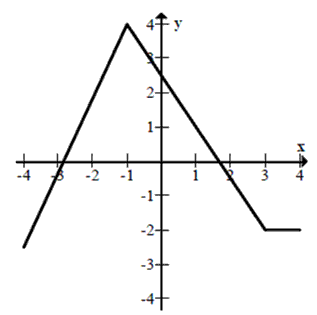
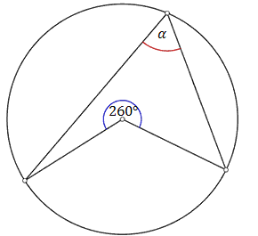

Zestaw treningowy 4
Cenę butów obniżono o \(10\%\), a po miesiącu dalszą cenę podwyższono o \(10\%\). W
wyniku obu obniżek cena butów:
A.wzrosła o \( 1\% \)
B.zmalała o \( 1\% \)
C.nie zmieniła się
D.wzrosła o \( 0{,}1\% \)
B
Liczba \(\sqrt[3]{(27)^{-1}}\cdot 72^0\) jest równa
A.\( \frac{1}{3} \)
B.\( -\frac{1}{3} \)
C.\( 0 \)
D.\( 3 \)
A
Liczba \((\sqrt{3}-1)^2+(\sqrt{5}-1)(\sqrt{5}+1)\) jest
równa
A.\( 8+\sqrt{3} \)
B.\( 8+2\sqrt{3} \)
C.\( 10+2\sqrt{3} \)
D.\( 8-2\sqrt{3} \)
D
Suma \(\log_{4}2+\log_{4}32\) jest równa
A.\( \log_{4}14 \)
B.\( \log_{16}48 \)
C.\( 3 \)
D.\( 4 \)
C
Wskaż liczbę, która spełnia nierówność \( |1 - 2x| \lt x \)
A.\( x=0 \)
B.\( x=0{,}5 \)
C.\( x=1 \)
D.\( x=2 \)
B
Liczby \(x_1, x_2\) są różnymi rozwiązaniami równania \(x^2-7=0\). Wtedy wyrażenie \(|x_1-x_2|\) jest równe
A.\( 0 \)
B.\( \sqrt{7} \)
C.\( -\sqrt{7} \)
D.\( 2\sqrt{7} \)
D
Miejscem zerowym funkcji kwadratowej \(y=-(-x-7)(1+x)\)
jest
A.\( x=7 \)
B.\( x=1 \)
C.\( x=0 \)
D.\( x=-1 \)
D
Funkcja \(f\) jest określona wzorem \(f(x)=5x-m\), gdzie
\(m\lt 0\). Wówczas spełniony jest warunek
A.\( f(1)\lt 0 \)
B.\( f(2)>10 \)
C.\( f(3)<-3 \)
D.\( f(4)=20 \)
B
Dany jest wykres funkcji  Ile miejsc zerowych ma ta funkcja w przedziale \(\langle -\pi , 1 \rangle\)?
A.\( 0 \)
B.\( 1 \)
C.\( 2 \)
D.\( 3 \)
B
Liczba \(\sin 60^\circ +\cos 60^\circ \) jest równa
A.\( 1 \)
B.\( -\frac{\sqrt{3}}{2} \)
C.\( \frac{\sqrt{3}+1}{2} \)
D.\( \frac{2\sqrt{3}-3}{6} \)
C
W trójkącie prostokątnym \(ABC\) odcinek \(AB\) jest przeciwprostokątną i
\(|AB|=5\) oraz \(|BC|=4\). Wówczas tangens kąta \(CAB\) jest równy
A.\( \frac{5}{4} \)
B.\( \frac{4}{3} \)
C.\( \frac{3}{4} \)
D.\( \frac{3}{5} \)
B
W trójkącie równobocznym \(ABC\) dana jest wysokość \(|CD|=3\). Średnica okręgu
opisanego na tym trójkącie ma długość:
A.\( 4 \)
B.\( \frac{2\sqrt{3}}{3} \)
C.\( \frac{4\sqrt{3}}{3} \)
D.\( 2 \)
A
W trójkącie prostokątnym dwa dłuższe boki mają długości \(\sqrt{5}\) i \(3\).
Obwód tego trójkąta jest równy
A.\( 5+\sqrt{5} \)
B.\( 5\sqrt{5} \)
C.\( 5+2\sqrt{5} \)
D.\( \sqrt{30} \)
A
Odcinki \(AB\) i \(CD\) są równoległe, trójkąt \(ABE\) jest równoboczny i
\(|AB|=5\) oraz \(|BD|=2\) (zobacz rysunek).  Obwód czworokąta \(ACDB\) wynosi:
Obwód czworokąta \(ACDB\) wynosi:
Obwód czworokąta \(ACDB\) wynosi: A.\( 12 \)
B.\( 14 \)
C.\( 16 \)
D.\( 18 \)
C
Obwód kwadratu wpisanego w okrąg o promieniu \(11\sqrt{2}\) jest równy
A.\( 22 \)
B.\( 44 \)
C.\( 88 \)
D.\( 121\sqrt{2} \)
C
Miara zaznaczonego na rysunku kąta \(\alpha \) jest równa 
A.\( 50^\circ \)
B.\( 60^\circ \)
C.\( 100^\circ \)
D.\( 130^\circ \)
A
Miary kątów trójkąta są trzema kolejnymi wyrazami ciągu arytmetycznego.
Najmniejszy kąt tego trójkąta ma miarę \(40^\circ \). Różnica ciągu arytmetycznego wynosi:
A.\( 10^\circ \)
B.\( 20^\circ \)
C.\( 30^\circ \)
D.\( 40^\circ \)
B
Dany jest ciąg \( (a_n) \) określony wzorem \(a_n=\frac{2^n\cdot n^2}{1-n^2}\) dla \(n\ge 1\). Wówczas wyraz \(a_3\)
tego ciągu jest równy
A.\( -7{,}2 \)
B.\( 7{,}2 \)
C.\( -9 \)
D.\( 9 \)
C
Objętość sześcianu jest równa \(27\). Pole powierzchni całkowitej tego
sześcianu jest równe
A.\( 54 \)
B.\( 18 \)
C.\( 12\sqrt{3} \)
D.\( 24\sqrt{3} \)
A
Tworząca stożka ma długość \(4\) i jest nachylona do płaszczyzny podstawy pod
kątem \(60^\circ \). Objętość tego stożka jest równa
A.\( \frac{8\sqrt{3}\pi }{3} \)
B.\( \frac{10\sqrt{3}\pi }{3} \)
C.\( 3\sqrt{3}\pi \)
D.\( 16 \)
A
Wskaż równanie prostej prostopadłej do prostej o równaniu \(2x-4y=5\).
A.\( y=\frac{1}{2}x \)
B.\( y=-\frac{1}{2} \)
C.\( y=2x \)
D.\( y=-2x \)
D
Na rysunku dany jest kwadrat, trójkąt i elipsa. Mamy również do dyspozycji
\(8\) kolorów farb. Na ile różnych sposobów można pomalować wszystkie trzy figury tymi ośmioma
kolorami, tak aby każda figura była w innym kolorze? 
A.\( 27 \)
B.\( 336 \)
C.\( 512 \)
D.\( {8}^{8} \)
B
Rozwiąż równanie \(x^2+6x+7=0\).
\(x=-3-\sqrt{2}\) lub \(x=-3+\sqrt{2}\)
Ze zbioru liczb \(\{1, 2, 3, 4, 5, 6, 7\}\) losujemy trzy razy po jednej
liczbie bez zwracania. Oblicz prawdopodobieństwo zdarzenia \(A\), polegającego na wylosowaniu
liczb, wśród których nie będzie liczby mniejszej od \(3\).
\(P(A)=\frac{2}{7}\)
Ciąg \((9, 18, x)\) jest geometryczny, a ciąg \((x, 30, y)\) jest
arytmetyczny.
Oblicz medianę liczb: \(10, x, y, 12, 12, 18, 30.\)
Oblicz medianę liczb: \(10, x, y, 12, 12, 18, 30.\)
\(18\)